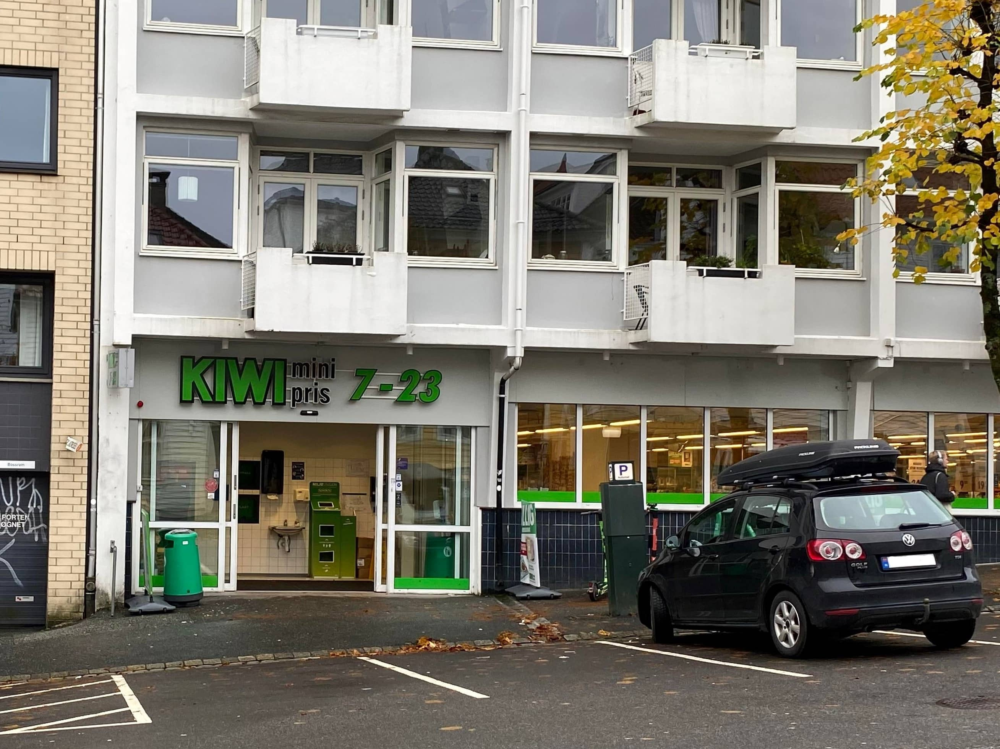
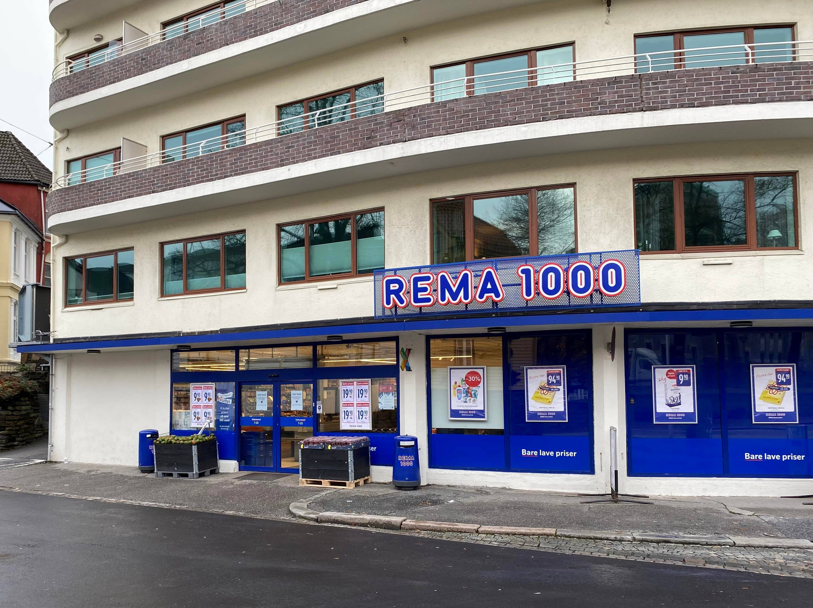

Breadcrumbs
Shops > Groceries
Groceries shops
There are many supermarkets around Bergen, but if you wanna save some money,
we recommend sticking to the ones you find in this page. The most important
thing when shopping on a budget is to look for First price or
Prima brand product. These are usually the cheapest ones.
Another good advice is to download one of the apps that shows all the offers
and deals of every supermarket. We recommend the one called
Kupp. This way you won't miss any offer that
they release.
Recommendations
Kiwi

-
Description: the cheapest
supermarket in Bergen. There's many of them all around the city
and they have a big variety of products, from food to cleaning
and hygiene products.
-
Location: Strømgaten
38, 5008 Bergen, Norway
-
Opening hours:
Monday to Saturday: 7am - 11pm
-
Phone number: +47 55 90 06 73
-
Website:
kiwi.no
Rema

-
Description: after Kiwi,
this is the next cheapest supermarket. There's also a
bunch of them around Bergen. We recommend going there
to buy vegetables, since they are most of the time
pretty cheap and really good quality.
-
Location: Jon Smørs
gate 11, 5011 Bergen, Norway
-
Opening hours:
Monday to Saturday: 7am - 11pm
-
Phone number: +47 55 90 28 98
-
Website:
rema.no